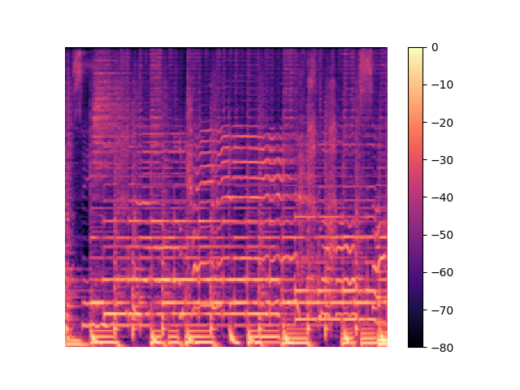

Muusika saate genereerimine tingimusliku vastandgeneratiivse närvivõrgu abil
Priidik Meelo Västrik
Juhendaja: Anna Aljanaki
Kõikidel järgnevatel helinäidetel on vasakul pool algne heli, keskel genereeritud heli ja paremal pool siht heli.
Trummide lisamine (96 epohhi)



Siin on hea näide, kuidas mudel rahulikumale loole lisas rahulikud trummid.